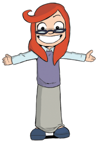
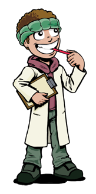
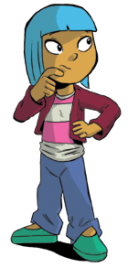
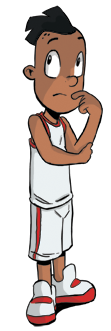

When we think about our educational experience we tend to think about school or university. And when we think of these we often think of listening to a talker at the front of a room. But when we think about our best learning experiences we probably think about our role models who taught us by example rather than by instruction. Kusasa provides problem-solving role models who show by example what it means to be a creative, committe, analytical thinker. Our characters talk about and show in action how they solve problems.
These four role models appear in the Kusasa content for grade 4. (The characters grow up through each grade of Kusasa, thus matching the ages of the learners in each grade.) As you will see, they represent four different learning and thinking styles, which means learners are likely to empathise strongly with at least one of these characters. In doing so, learners can discover how they can more effectively use their own, natural thinking style (which may not be fully appreciated or encouraged within their own school). And they can discover how to supplement their intuitive thinking style with other ways of thinking.

Sophie is a verbal / linguistic thinker. She has the personality of a theorist. She's always asking questions, always reading a new book, and her favourite place is the school library. She has strong opinions on every subject under the sun, and it takes a lot to convince her of your opinion with her highly sceptical nature.

Tom is a logical / mathematical thinker. He has the personality of an inventor. He's always tinkering with his latest invention, and looking out for new inventive challenges. His favourite place is the science lab, where he can conduct his latest experiments, and the junk yard, where he can find bits and pieces of rubbish to turn into his next invention.

Farrah is a visual and musical thinker. She has the personality of an artist. She's always drawing, painting or doing some kind of dance or dramatic performance. She's very trusting of people and their opinions. Sometimes too trusting and a little gullible. She loves talking to people and learning about them, which helps her as a performer. She can do uncanny impressions of just about anyone, including Sophie. But the two girls are inseparable. Farrah learns from Sophie how to be more analytical; Sophie learners from Farrah how to be more imaginative and creative in her thinking. Learners absorb both ways of thinking from these two characters.

Jojo is a kinesthetic or bodily thinker. He has the personality of a doer. He's always the first to leap into action to get things done. He has boundless energy and is playful at all times. Sometimes the others find him exhausting. He is a little messy, which can irritate Tom. But the two are, nonetheless, good mates. Jojo learns from Tom how to be more systematic and methodical in his approach to solving problems; Tom learners from Jojo how to be more action and goal-oriented, and how to get to grips with problems by immersing not only his mind but also his muscles in his daily challenges. Learners absorb both ways of thinking from these two characters.